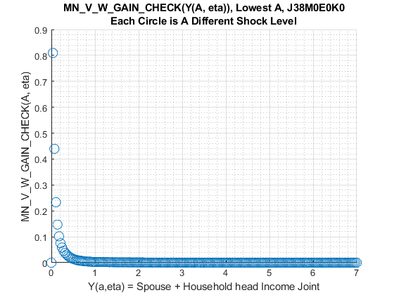
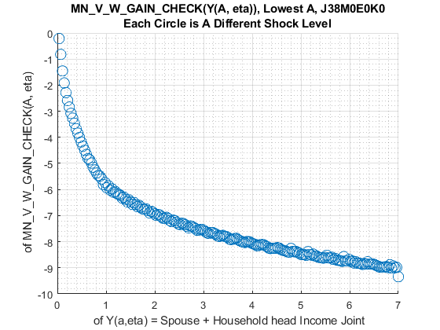

Chapter 8 2019 Expectations Given Income, Age, Kids and Marital Status
8.1 2019 Age, Income, Kids, Marry EV and EC of One Check
This is the example vignette for function: snw_evuvw20_jaeemk from the PrjOptiSNW Package. 2019 integrated over VU and VW
8.1.1 Test SNW_EVUVW19_JMKY Defaults Dense
Set Parameters
Call the function with defaults.
clear all;
st_solu_type = 'bisec_vec';
% Solve the VFI Problem and get Value Function
% mp_params = snw_mp_param('default_moredense_a100z266_e0m0');
% mp_params = snw_mp_param('default_tiny');
% mp_params = snw_mp_param('default_dense');
mp_params = snw_mp_param('default_docdense');
mp_controls = snw_mp_control('default_test');
% set Unemployment Related Variables
xi=0.5; % Proportional reduction in income due to unemployment (xi=0 refers to 0 labor income; xi=1 refers to no drop in labor income)
b=0; % Unemployment insurance replacement rate (b=0 refers to no UI benefits; b=1 refers to 100 percent labor income replacement)
TR=100/58056; % Value of a welfare check (can receive multiple checks). TO DO: Update with alternative values
mp_params('xi') = xi;
mp_params('b') = b;
mp_params('TR') = TR;
% Check Numbers
% n_incgrid=201; % Number of income groups
% n_incgrid_aux=round(0.75*n_incgrid);
% inc_grid1=linspace(0,4,n_incgrid_aux)'; % 4 refers to 4*58056=232224 dollars in 2012USD
% inc_grid=[inc_grid1;linspace(4+((7-4)/(n_incgrid-n_incgrid_aux)),7,n_incgrid-n_incgrid_aux)']; % 7 refers to 7*58056=406392 dollars in 2012USD
n_incgrid=201; % Number of income groups
inc_grid=linspace(0,7,n_incgrid)';
mp_params('n_incgrid') = n_incgrid;
mp_params('inc_grid') = inc_grid;
% Solve for Unemployment Values
mp_controls('bl_print_vfi') = false;
mp_controls('bl_print_ds') = false;
mp_controls('bl_print_ds_verbose') = false;
mp_controls('bl_print_precompute') = false;
mp_controls('bl_print_precompute_verbose') = false;
mp_controls('bl_print_a4chk') = false;
mp_controls('bl_print_a4chk_verbose') = false;
mp_controls('bl_print_evuvw20_jaeemk') = false;
mp_controls('bl_print_evuvw20_jaeemk_verbose') = false;
mp_controls('bl_print_evuvw19_jaeemk') = false;
mp_controls('bl_print_evuvw19_jaeemk_verbose') = false;
mp_controls('bl_print_evuvw19_jmky') = false;8.1.2 Solve VFI and Distributon
% Solve the Model to get V working and unemployed
[V_ss,ap_ss,cons_ss,mp_valpol_more_ss] = snw_vfi_main_bisec_vec(mp_params, mp_controls);
Completed SNW_VFI_MAIN_BISEC_VEC;SNW_MP_PARAM=default_moredense;SNW_MP_CONTROL=default_test;time=116.3024
inc_VFI = mp_valpol_more_ss('inc_VFI');
spouse_inc_VFI = mp_valpol_more_ss('spouse_inc_VFI');
total_inc_VFI = inc_VFI + spouse_inc_VFI;
% Solve unemployment
[V_unemp,~,cons_unemp,~] = snw_vfi_main_bisec_vec(mp_params, mp_controls, V_ss);
Completed SNW_VFI_MAIN_BISEC_VEC 1 Period Unemp Shock;SNW_MP_PARAM=default_moredense;SNW_MP_CONTROL=default_test;time=110.4713
[Phi_true] = snw_ds_main(mp_params, mp_controls, ap_ss, cons_ss, mp_valpol_more_ss);
Completed SNW_DS_MAIN;SNW_MP_PARAM=default_moredense;SNW_MP_CONTROL=default_test;time=192.6858
% Get Matrixes
cl_st_precompute_list = {'a', ...
'inc', 'inc_unemp', 'spouse_inc', 'spouse_inc_unemp', 'ref_earn_wageind_grid', ...
'ap_idx_lower_ss', 'ap_idx_higher_ss', 'ap_idx_lower_weight_ss', ...
'inc_tot_ygroup_grid'};
mp_controls('bl_print_precompute_verbose') = false;8.1.3 Pre-Compute Matrixes and YMKY Mass
% Pre-compute
[mp_precompute_res] = snw_hh_precompute(mp_params, mp_controls, cl_st_precompute_list, ap_ss, Phi_true);
Wage quintile cutoffs=0.48006 0.84085 1.2804 2.2175
Completed SNW_HH_PRECOMPUTE;SNW_MP_PARAM=default_moredense;SNW_MP_CONTROL=default_test;time cost=123.8837
inc_tot_ygroup_grid = mp_precompute_res('inc_tot_ygroup_grid');
% YMKY Mass
[Phi_true_jmky] = snw_evuvw19_jmky_mass(mp_params, mp_controls, Phi_true, inc_tot_ygroup_grid);
SNW_EVUVW19_JMKY_MASS Start
Completed SNW_EVUVW19_JMKY_MASS;SNW_MP_PARAM=default_moredense;SNW_MP_CONTROL=default_test;time=2.6607
----------------------------------------
xxxxxxxxxxxxxxxxxxxxxxxxxxxxxxxxxxxxxxxx
CONTAINER NAME: mp_outcomes ND Array (Matrix etc)
xxxxxxxxxxxxxxxxxxxxxxxxxxxxxxxxxxxxxxxx
i idx ndim numel rowN colN sum mean std coefvari min max
_ ___ ____ __________ ____ _________ ______ __________ __________ ________ ___ ________
Phi_true 1 1 6 1.128e+07 83 1.359e+05 45.793 4.0598e-06 5.7557e-05 14.177 0 0.036903
Phi_true_jmky 2 2 4 1.6482e+05 82 2010 45.787 0.0002778 0.0013979 5.0321 0 0.0674958.1.4 Solve for 2019 Evuvw With 0 and 2 Checks
Zero checks:
% Solve ev 19 JAEEMK
welf_checks = 0;
[ev19_jaeemk_check0, ec19_jaeemk_check0, ev20_jaeemk_check0, ec20_jaeemk_check0] = ...
snw_evuvw19_jaeemk(...
welf_checks, st_solu_type, mp_params, mp_controls, ...
V_ss, cons_ss, V_unemp, cons_unemp, mp_precompute_res);
Completed SNW_A4CHK_UNEMP_BISEC_VEC;welf_checks=0;TR=0.0017225;xi=0.5;b=0;SNW_MP_PARAM=default_moredense;SNW_MP_CONTROL=default_test;time cost=38.8484
Completed SNW_A4CHK_WRK_BISEC_VEC;welf_checks=0;TR=0.0017225;SNW_MP_PARAM=default_moredense;SNW_MP_CONTROL=default_test;time cost=38.6669
Completed SNW_EVUVW20_JAEEMK;SNW_MP_PARAM=default_moredense;SNW_MP_CONTROL=default_test;timeEUEC=2.0952
Completed SNW_EVUVW19_JAEEMK;SNW_MP_PARAM=default_moredense;SNW_MP_CONTROL=default_test;time=77.3603
% Solve ev 19 JMKY
[ev19_jmky_check0, ec19_jmky_check0] = snw_evuvw19_jmky(...
mp_params, mp_controls, ...
ev19_jaeemk_check0, ec19_jaeemk_check0, ...
Phi_true, Phi_true_jmky, inc_tot_ygroup_grid);
Completed SNW_EVUVW19_JMKY;SNW_MP_PARAM=default_moredense;SNW_MP_CONTROL=default_test;time=5.0081
----------------------------------------
xxxxxxxxxxxxxxxxxxxxxxxxxxxxxxxxxxxxxxxx
CONTAINER NAME: mp_outcomes ND Array (Matrix etc)
xxxxxxxxxxxxxxxxxxxxxxxxxxxxxxxxxxxxxxxx
i idx ndim numel rowN colN sum mean std coefvari min max
_ ___ ____ __________ ____ _________ ___________ __________ __________ ________ ________ ________
Phi_true 1 1 6 1.128e+07 83 1.359e+05 45.793 4.0598e-06 5.7557e-05 14.177 0 0.036903
Phi_true_jmky 2 2 4 1.6482e+05 82 2010 45.787 0.0002778 0.0013979 5.0321 0 0.067495
ec19_jaeemk 3 3 6 1.1144e+07 82 1.359e+05 4.7069e+07 4.2238 5.1273 1.2139 0.082339 64.79
ec19_jmky 4 4 4 1.6482e+05 82 2010 3.2335e+05 1.9618 2.2352 1.1393 0 13.638
ev19_jaeemk 5 5 6 1.1144e+07 82 1.359e+05 -2.1277e+07 -1.9093 20.063 -10.508 -311.4 23.088
ev19_jmky 6 6 4 1.6482e+05 82 2010 -16603 -0.10073 14.739 -146.32 -311.4 19.334Two checks:
% Solve ev 19 JAEEMK
welf_checks = 1;
[ev19_jaeemk_check2, ec19_jaeemk_check2, ev20_jaeemk_check2, ec20_jaeemk_check2] = ...
snw_evuvw19_jaeemk(...
welf_checks, st_solu_type, mp_params, mp_controls, ...
V_ss, cons_ss, V_unemp, cons_unemp, mp_precompute_res);
Completed SNW_A4CHK_UNEMP_BISEC_VEC;welf_checks=1;TR=0.0017225;xi=0.5;b=0;SNW_MP_PARAM=default_moredense;SNW_MP_CONTROL=default_test;time cost=40.8696
Completed SNW_A4CHK_WRK_BISEC_VEC;welf_checks=1;TR=0.0017225;SNW_MP_PARAM=default_moredense;SNW_MP_CONTROL=default_test;time cost=39.9078
Completed SNW_EVUVW20_JAEEMK;SNW_MP_PARAM=default_moredense;SNW_MP_CONTROL=default_test;timeEUEC=1.9646
Completed SNW_EVUVW19_JAEEMK;SNW_MP_PARAM=default_moredense;SNW_MP_CONTROL=default_test;time=85.8135
% Solve ev 19 JMKY
[ev19_jmky_check2, ec19_jmky_check2] = snw_evuvw19_jmky(...
mp_params, mp_controls, ...
ev19_jaeemk_check2, ec19_jaeemk_check2, ...
Phi_true, Phi_true_jmky, inc_tot_ygroup_grid);
Completed SNW_EVUVW19_JMKY;SNW_MP_PARAM=default_moredense;SNW_MP_CONTROL=default_test;time=4.5581
----------------------------------------
xxxxxxxxxxxxxxxxxxxxxxxxxxxxxxxxxxxxxxxx
CONTAINER NAME: mp_outcomes ND Array (Matrix etc)
xxxxxxxxxxxxxxxxxxxxxxxxxxxxxxxxxxxxxxxx
i idx ndim numel rowN colN sum mean std coefvari min max
_ ___ ____ __________ ____ _________ ___________ __________ __________ ________ ________ ________
Phi_true 1 1 6 1.128e+07 83 1.359e+05 45.793 4.0598e-06 5.7557e-05 14.177 0 0.036903
Phi_true_jmky 2 2 4 1.6482e+05 82 2010 45.787 0.0002778 0.0013979 5.0321 0 0.067495
ec19_jaeemk 3 3 6 1.1144e+07 82 1.359e+05 4.7072e+07 4.2241 5.1274 1.2138 0.083396 64.792
ec19_jmky 4 4 4 1.6482e+05 82 2010 3.2336e+05 1.9619 2.2352 1.1393 0 13.639
ev19_jaeemk 5 5 6 1.1144e+07 82 1.359e+05 -2.1225e+07 -1.9047 20.051 -10.527 -310.76 23.088
ev19_jmky 6 6 4 1.6482e+05 82 2010 -16281 -0.098779 14.729 -149.11 -310.76 19.334Differences between Checks in Expected Value and Expected Consumption
mn_V_U_gain_check = ev19_jmky_check2 - ev19_jmky_check0;
mn_MPC_U_gain_share_check = (ec19_jmky_check2 - ec19_jmky_check0)./(welf_checks*mp_params('TR'));8.1.5 Dense Param Results Define Frames
Define the matrix dimensions names and dimension vector values. Policy and Value Functions share the same ND dimensional structure.
% Grids:
age_grid = 18:99;
marry_grid = [0,1];
kids_grid = (1:1:mp_params('n_kidsgrid'))';
inc_grid = mp_params('inc_grid');
cl_mp_datasetdesc = {};
cl_mp_datasetdesc{1} = containers.Map({'name', 'labval'}, {'age', age_grid});
cl_mp_datasetdesc{2} = containers.Map({'name', 'labval'}, {'marry', marry_grid});
cl_mp_datasetdesc{3} = containers.Map({'name', 'labval'}, {'kids', kids_grid});
cl_mp_datasetdesc{4} = containers.Map({'name', 'labval'}, {'ylower', inc_grid});8.1.6 Analyze Marginal Value and MPC over Y(a,eta), Conditional On Kids, Marry, Age, Education
Income is generated by savings and shocks, what are the income levels generated by all the shock and savings points conditional on kids, marital status, age and educational levels. Plot on the Y axis MPC, and plot on the X axis income levels, use colors to first distinguish between different a levels, then use colors to distinguish between different eta levles.
Set Up date, Select Age 37, unmarried, no kids, lower education:
% NaN(n_jgrid,n_agrid,n_etagrid,n_educgrid,n_marriedgrid,n_kidsgrid);
% 38 year old, unmarried, no kids, lower educated
% Only Household Head Shock Matters so select up to 'n_eta_H_grid'
mn_V_W_gain_check_use = ev19_jmky_check2 - ev19_jmky_check0;
mn_C_W_gain_check_use = ec19_jmky_check2 - ec19_jmky_check0;Select Age, Education, Marital, Kids Count:s
% Selections
it_age = 21; % +18
it_marital = 1; % 1 = unmarried
it_kids = 1; % 1 = kids is zero
% Select: NaN(n_jgrid-1,n_marriedgrid,n_kidsgrid,n_incgrid);
mn_C_W_gain_check_jemk = mn_C_W_gain_check_use(it_age, it_marital, it_kids, :);
mn_V_W_gain_check_jemk = mn_V_W_gain_check_use(it_age, it_marital, it_kids, :);
% Reshape, so shock is the first dim, a is the second
ar_C_W_gain_check_jemk = mn_C_W_gain_check_jemk(:);
ar_V_W_gain_check_jemk = mn_V_W_gain_check_jemk(:);Marginal Value Gains, Color as Shock, Conditional on Age, Marital, Kids, and Education
How do shocks and a impact marginal value. First plot one asset level, variation comes only from increasingly higher shocks:
figure();
scatter(inc_grid, ar_V_W_gain_check_jemk, 100);
title({'MN\_V\_W\_GAIN\_CHECK(Y(A, eta)), Lowest A, J38M0E0K0', ...
'Each Circle is A Different Shock Level'});
xlabel('Y(a,eta) = Spouse + Household head Income Joint');
ylabel('MN\_V\_W\_GAIN\_CHECK(A, eta)');
grid on;
grid minor;
figure();
it_shock = 1;
scatter((inc_grid), log(ar_V_W_gain_check_jemk), 100);
title({'MN\_V\_W\_GAIN\_CHECK(Y(A, eta)), Lowest A, J38M0E0K0', ...
'Each Circle is A Different Shock Level'});
xlabel(' of Y(a,eta) = Spouse + Household head Income Joint');
ylabel(' of MN\_V\_W\_GAIN\_CHECK(A, eta)');
grid on;
grid minor;
Marginal Consumption Gains, Color as Shock, Conditional on Age, Marital, Kids, and Education
Plot all asset levels:
figure();
scatter(inc_grid, ar_C_W_gain_check_jemk, 100);
title({'(MN\_C\_W\_GAIN\_CHECK(Y,eta)), All A (Savings) Levels, J38M0E0K0', ...
'Color Represent different A Savings State, Circle-Group=Shock'});
xlabel('income(a,eps)');
ylabel('MN\_C\_W\_GAIN\_CHECK(EM,J)');
grid on;
grid minor;
figure();
scatter((inc_grid), log(ar_C_W_gain_check_jemk), 100);
title({'(MN\_C\_W\_GAIN\_CHECK(Y,eta)), All A (Savings) Levels, J38M0E0K0', ...
'Color Represent different A Savings State, Circle-Group=Shock'});
xlabel('log of income(a,eps)');
ylabel('log of (MN\_V\_W\_GAIN\_CHECK(EM,J))');
grid on;
grid minor;
8.2 2019 Age, Income, Kids, Marry EV and EC All Checks
This is the example vignette for function: snw_evuvw20_jaeemk from the PrjOptiSNW Package. 2019 integrated over VU and VW
8.2.1 Test SNW_EVUVW19_JMKY_ALLCHECKS Parameters
Save a result that is low in memory cost so that it can be loaded quickly for various allocation tests. Turn off Various Printing Controls. Call function with wide income bins to reduce memory storage and retrievel costs
clear all;
% Start mp contorls
mp_controls = snw_mp_control('default_test');
% Solve for Unemployment Values
mp_controls('bl_print_vfi') = false;
mp_controls('bl_print_vfi_verbose') = false;
mp_controls('bl_print_ds') = false;
mp_controls('bl_print_ds_verbose') = false;
mp_controls('bl_print_precompute') = false;
mp_controls('bl_print_precompute_verbose') = false;
mp_controls('bl_print_a4chk') = false;
mp_controls('bl_print_a4chk_verbose') = false;
mp_controls('bl_print_evuvw20_jaeemk') = false;
mp_controls('bl_print_evuvw20_jaeemk_verbose') = false;
mp_controls('bl_print_evuvw19_jaeemk') = false;
mp_controls('bl_print_evuvw19_jaeemk_verbose') = false;
mp_controls('bl_print_evuvw19_jmky') = false;
mp_controls('bl_print_evuvw19_jmky_verbose') = false;Dense default, and unemployment parameters:
% default dense load
mp_params = snw_mp_param('default_docdense');
% Unemployment
xi=0.5; % Proportional reduction in income due to unemployment (xi=0 refers to 0 labor income; xi=1 refers to no drop in labor income)
b=0; % Unemployment insurance replacement rate (b=0 refers to no UI benefits; b=1 refers to 100 percent labor income replacement)
TR=100/58056; % Value of a wezlfare check (can receive multiple checks). TO DO: Update with alternative values
mp_params('xi') = xi;
mp_params('b') = b;
mp_params('TR') = TR;
% Check Count: 89 checks to allow for both the first and the second round
n_welfchecksgrid = 3;
mp_params('n_welfchecksgrid') = n_welfchecksgrid;Income bins:
% Income Grid
% 4 refers to 4*58056=232224 dollars in 2012USD
% max 7 refers to 7*58056=406392 dollars in 2012USD
% all phase out = (4400/5)*100 + 150000 = 238000
% if 500 dollar interval, need 476 inc groups before 238000
% if have 85 percent of points betwen 238000,
fl_max_phaseout = 238000;
fl_multiple = 58056;
it_bin_dollar_before_phaseout = 5000;
it_bin_dollar_after_phaseout = 25000;
fl_thres = fl_max_phaseout/fl_multiple;
inc_grid1 = linspace(0,fl_thres,(fl_max_phaseout)/it_bin_dollar_before_phaseout);
inc_grid2 = linspace(fl_thres, 7, (7*fl_multiple-fl_max_phaseout)/it_bin_dollar_after_phaseout);
inc_grid=sort(unique([inc_grid1 inc_grid2]'));
mp_params('n_incgrid') = length(inc_grid);
mp_params('inc_grid') = inc_grid;8.2.2 SNW_EVUVW19_JMKY_ALLCHECKS Low Storage Invoke
The simulation here (dense) requires less than 10 GB of memory with 8 workers (8 threads needed), simulating over 88 checks takes with 8 workers
st_solu_type = 'bisec_vec';
bl_parfor = false;
it_workers = 1;
bl_export = false;
snm_suffix = ['_ybin' num2str(it_bin_dollar_before_phaseout)];
[ev19_jmky_allchecks, ec19_jmky_allchecks, output] = ...
snw_evuvw19_jmky_allchecks(mp_params, mp_controls, ...
st_solu_type, bl_parfor, it_workers, bl_export, snm_suffix);